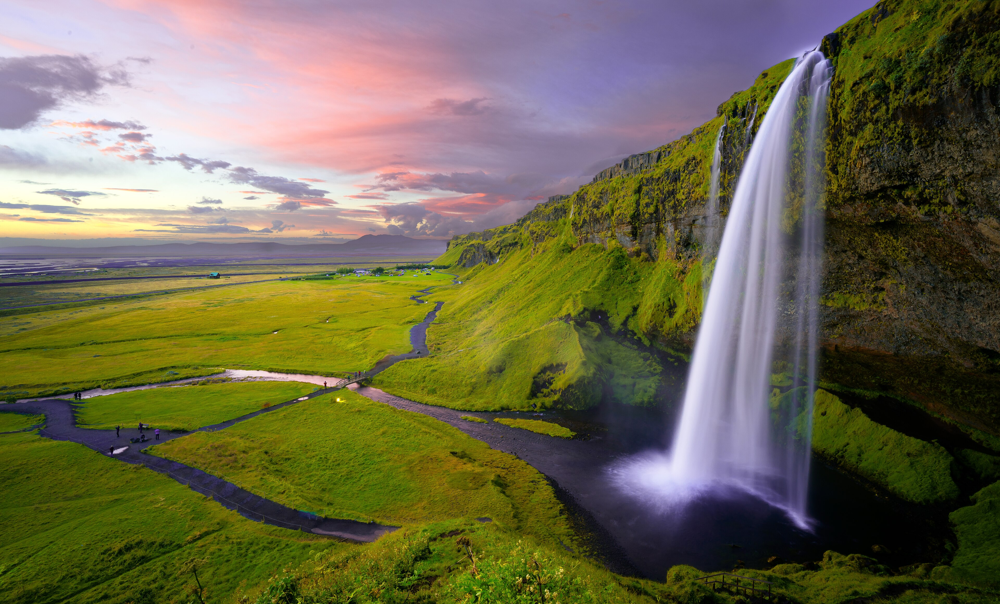
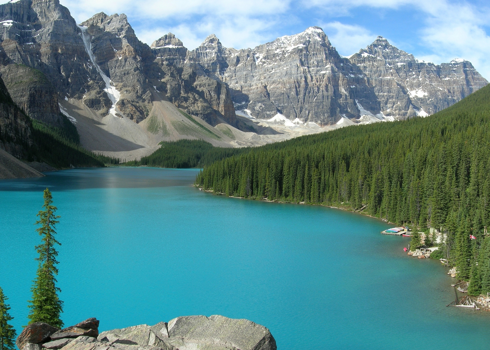
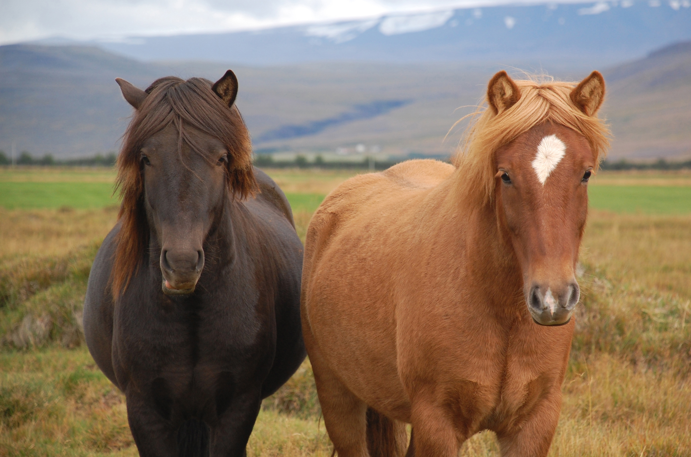
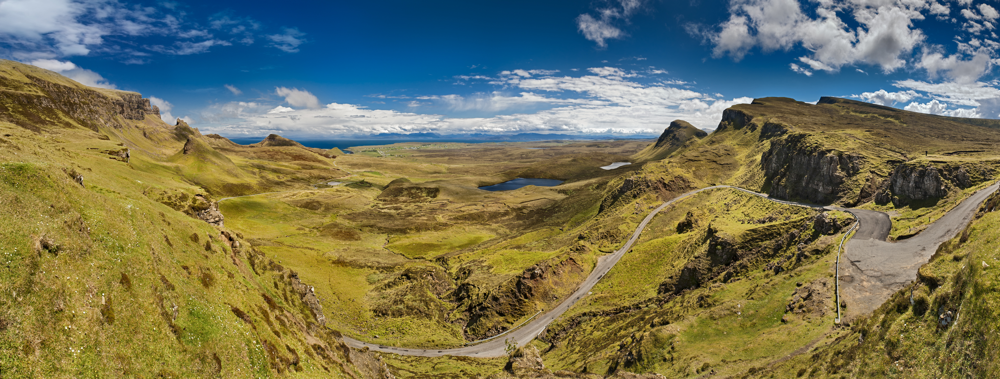
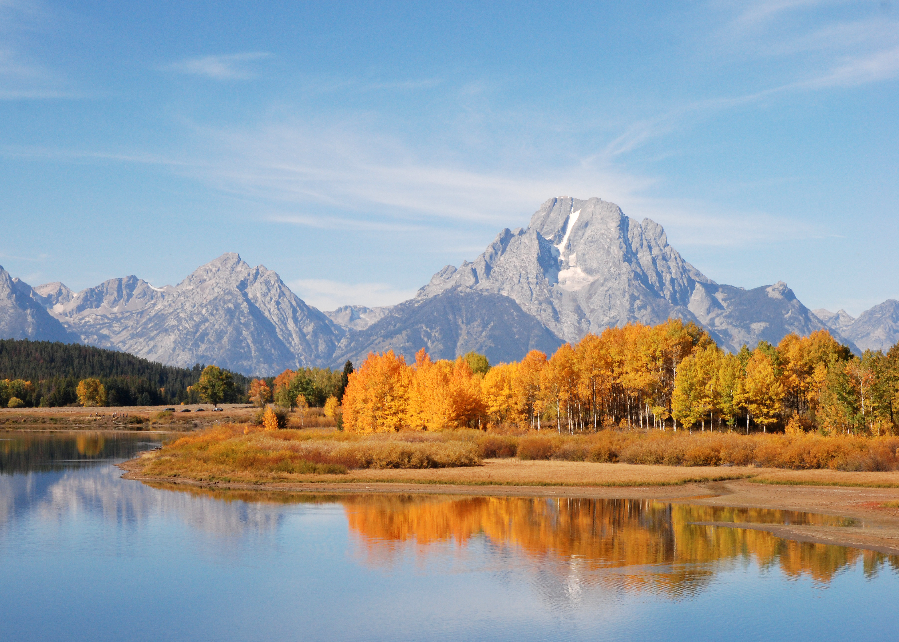
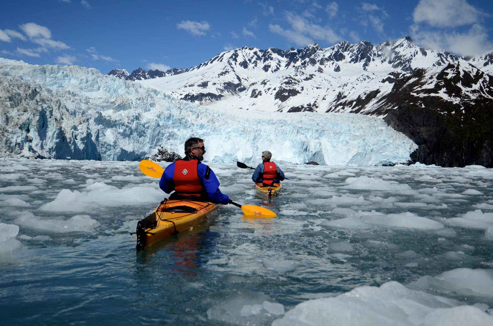
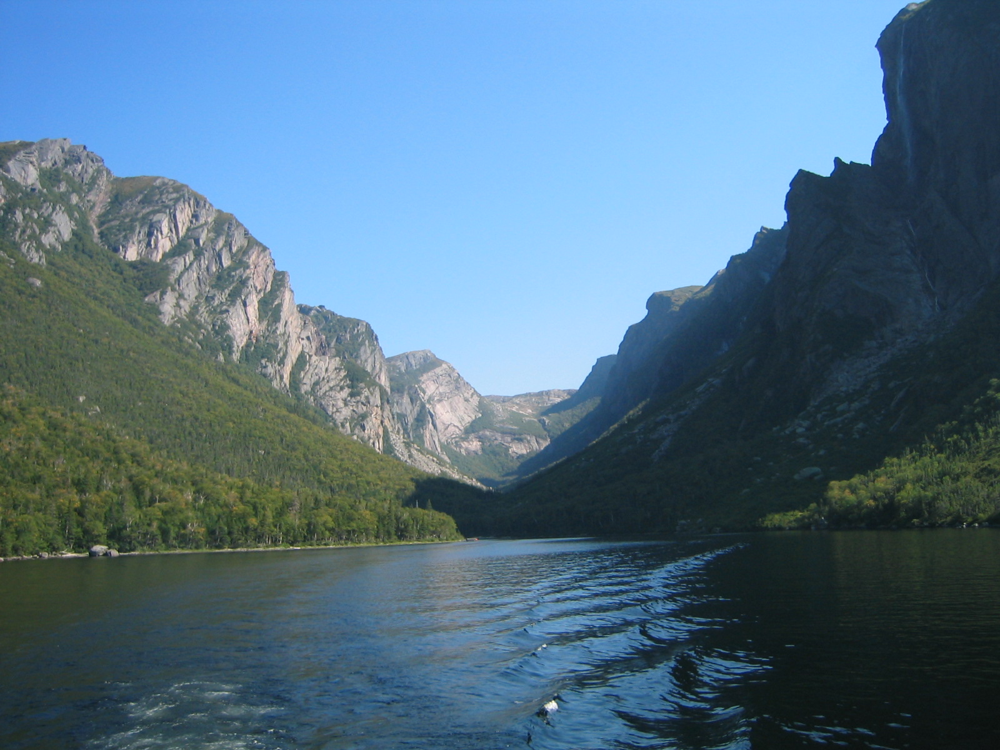
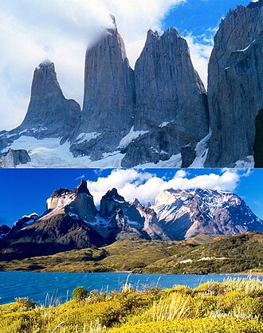
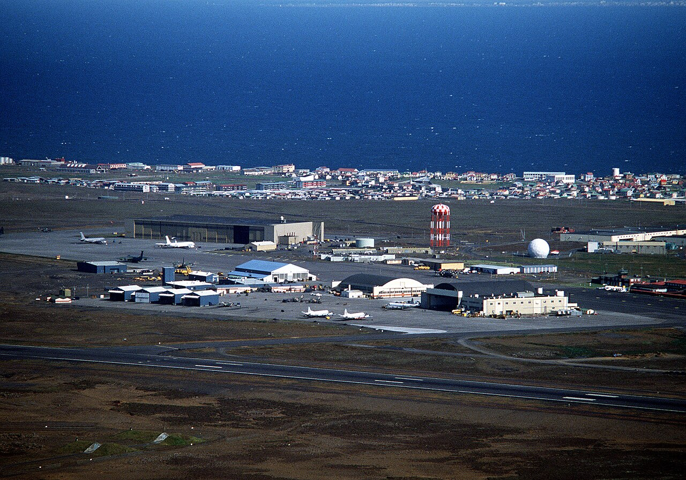
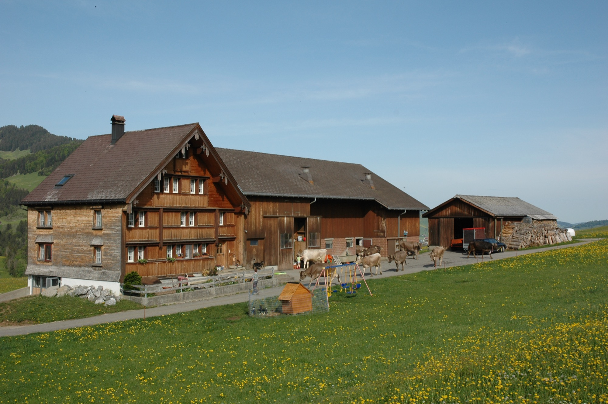

Ready to compare
Bookable Trips

New route concept · Reykjavík → Bavaria → Austria
Fire to Fjord: Iceland + Alpine Loop
Four Reykjavík nights, a nonstop bridge to Munich, Königssee and Salzkammergut, plus exact September flight evidence and a protected Delta nonstop home.
DatesSep 5–18
Best exitMUC → ATL
Nights13

New route concept · Zürich → Austria → Slovenia
Alpine Thread: Zürich to Slovenia
A cinematic open-jaw route through Appenzell, Lünersee, Salzkammergut, the Soča Valley, Bled, and Bohinj—with a switchable Austria-only option.
ShapeZRH → VCE
InspirationRyan Shirley
Days14
Austria + Bavaria · Aug 31-Sep 13
Austria Alpine Farm + Lakes Loop
Premium alpine loop with Stanglwirt as the default farm/spa anchor, then Wolfgangsee, Hallstatt, Berchtesgaden, Konigssee, and practical savings notes.
Total$11,930
FlightsDL130 / DL131
Days14

Slovenia + Venice gateway · Aug 31-Sep 13
Slovenia Julian Alps + Venice Gateway Loop
Austria-adjacent alpine alternative centered on Bled, Bohinj, Lake Jasna, the Soča Valley, Postojna, Ljubljana, and a protected Venice airport buffer.
Total$11,715
FlightsATL-VCE Delta-first
Days14

Canadian Rockies · Aug 31-Sep 13
Banff + Lake Louise Bookable Rockies Loop
Calgary, Canmore, Banff, Lake Louise, Jasper, Icefields Parkway, lake walks, and practical lodge bases with Fairmont/Post upgrade options.
Total$9,438
FlightsDL7203 / DL6880
Days14

Iceland · Aug 31-Sep 13
Iceland Farm + South Coast Bookable Loop
Reykjavik, Golden Circle farm stay, horses, waterfalls, black sand beaches, South Coast guesthouses, and Snaefellsnes with Hotel Ranga/Budir upgrade options.
Total$9,617
FlightsDL2386 + DL246
Days14

Scotland · Aug 31-Sep 13
Scotland Highlands Farm + Estate Loop
Edinburgh, Perthshire, Trossachs farm/loch base, Cairngorms, Braemar, castles, and optional Gleneagles/Fife Arms splurge swaps.
Total$10,451
FlightsDL34 / DL35
Days14

Wyoming · Aug 31-Sep 13
Grand Teton + Jackson Hole Bookable Loop
Jackson, Signal Mountain/Jenny Lake area, wildlife drives, Jackson Lake, Teton Village, and a Jenny Lake Lodge upgrade option.
Total$8,903
FlightsDL315 / DL314
Days14

Wyoming + Yellowstone + Oregon · Aug 31-Sep 13
Teton + Yellowstone + Oregon Cascades Multi-City Loop
Expanded Teton alternate with Jackson, Jenny Lake, Old Faithful, Canyon, a flight hop to Oregon, Bend, Crater Lake, Mount Hood, and the Columbia Gorge.
Total$12,410
FlightsATL-JAC / PDX-ATL
Days14

Alaska · Aug 31-Sep 13
Alaska Kenai + Anchorage Bookable Loop
Anchorage, Girdwood, Seward, Kenai Fjords, Homer, Knik/Palmer glacier finale, with Stillpoint and flightseeing kept as upgrade options.
Total$10,193
FlightsDL416 / DL415
Days14

Newfoundland · Aug 31-Sep 13
Newfoundland Coast + Gros Morne
St. John's, Cape Spear, Trinity, Bonavista, Twillingate, Fogo Island, and Gros Morne, with Fogo Island Inn kept as an explicit upgrade rather than the default.
Total$10,410
FlightsAC via YYZ
Days14

Patagonia · Aug 31-Sep 13
Patagonia Glacier + Torres Family Adventure
Higher-effort adventure option: Buenos Aires buffers, El Calafate, Perito Moreno Glacier, El Chaltén, Puerto Natales, and Torres del Paine scaled for baby logistics.
Total$13,290
FlightsATL-EZE + domestic legs
Days14
One-off research
Planning Notes

ATL → Iceland → mainland Europe · Sep 5–19
Iceland–Europe Flight Price Sheet
Eighty-five detailed cash rows, a dedicated 45-flight Iceland–Europe nonstop chart for Sep 10–15, plus the exact Delta multi-city award: ATL → KEF / MUC → ATL for 105,200 miles + $139.13 per adult.
CurrencyUSD
Best hingeMunich
CheckedAug 1

Zürich → Austria → Slovenia corridor
Alpine Farm Stay Field Notes
Eleven real farm stays with published rates, working-farm context, premium resort benchmarks, family notes, and honest route-fit tradeoffs—kept separate from any finished itinerary.
Range~€70–675+
Shortlist11 stays
FormatResearch
Definition of done
Bookable Standard
Exact flight numbers, times, airline, fare snapshot, and infant-in-lap note.
Chosen hotels, dates, room assumptions, nightly cost, source, and booking link.
One page per day with pitch, activity, backup, food, transport, baby logistics, cost, and image.
Ryan Shirley videos are used for inspiration, then cross-checked with official parks, tourism, hotel, airline, and activity sources.
Research inputs
Video + Source Trail
Used for candidate place ideas like Hallstatt, Dachstein, Salzburg, Tyrol, and alpine lake days.
Used for South Coast, glacier lagoon, Snæfellsnes, and waterfall sequencing ideas.
Used for Highlands, castles, lochs, Skye-style scenery, and Cairngorms inspiration.
Used as a broader inspiration pass for Banff-style mountain scenery, Tetons, and Alaska-style wilderness days.
Used for St. John's, puffins, Terra Nova, Fogo ferry logistics, and Gros Morne route validation.
Delta, partner airline snippets, hotel pages, park services, tourism boards, lift/gondola pages, and activity operators.